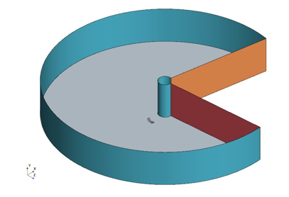
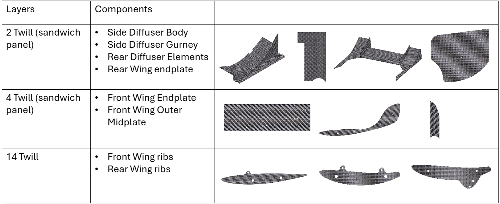
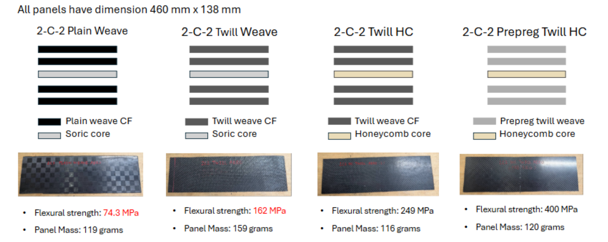

Appendices
Appendix A. CFD Simulation Setup
Table A1 lists the settings used for the cornering simulations in Sections 5 and 6. To model cornering, the car is placed in an annular-sector domain centred on the corner centre, so that the car follows a curved path of constant radius (Figure A1).

| Setting | Value |
|---|---|
| Software | Siemens Simcenter STAR-CCM+ |
| Geometry | Simplified CFD model of the full car (Section 5.1) |
| Domain | Annular sector centred on the corner centre (Figure A1) |
| Turbulence model | Steady k-ω SST RANS |
| Corner radius | 9.125 m |
| Vehicle speed | 11.1 m/s (40 km/h); lateral acceleration v²/r ≈ 13.5 m/s² (1.38 g) |
| Ground and wheels | Moving ground and rotating wheels |
| Volume mesh | Trimmed (hexahedral) cells |
| Surface mesh | Surface remesher, triangular cells |
| Base size | Varies between simulations; the minimum surface sizes below are given as percentages of the base size |
| Prism layers: car body | 8 layers, 8 mm total thickness; minimum surface size 6.25% of base |
| Prism layers: wings | 10 layers, 8 mm total thickness; minimum surface size 3.125% of base |
| Cell count | About 30 million |
| Iterations | 2000 (originally 3500; Section 5.3) |
| Reported values | Mean of the last 300 iterations of each force monitor |
Appendix B. Flat Panels
Figures B1 and B2 present the composite layup schedules for the aerodynamic components and the flat-panel layup configurations manufactured via vacuum infusion (Section 7.1), together with their flexural strengths and panel masses.

